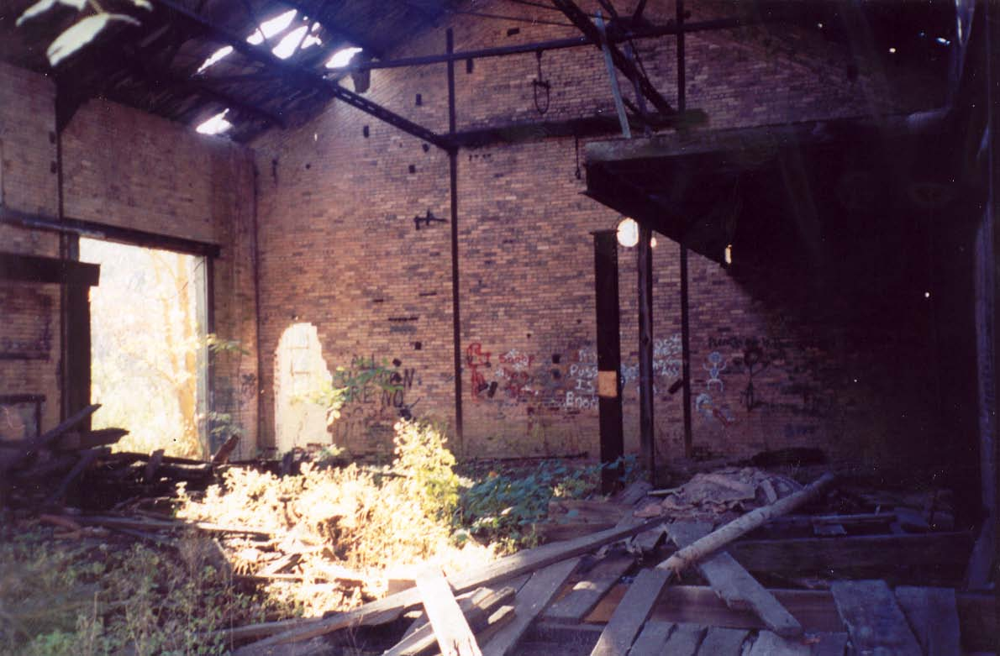

These ruins, which make up one of the most decrepit places I've encountered in our wonderful state, stand on State Route 147 or 149 (I forget which) just barely outside of Bellaire, Ohio, in Belmont County. The moment the highway leaves the residential part of the city and really starts into the woods, it passes this pile of bricks, blocks, and wood. It really does look like the place was bombed in an air raid sixty years ago and left to rot. In fact, it's in such bad shape that it took two months before anyone could positively idenfity the place when I posted it in my updates with a challenge to "Name That Building." My friend and coworker Greg Gossett, who showed me and my later-girlfriend the place in October of 2004, had only the vaguest notion that it was a former coke plant of some kind, and he's a legitimate expert on Belmont County.

As it turns out, this is what remains of the Bellaire Gas Light and Coke Works. In 1876 gas lighting had become popular and there was a demand for a supplier in Bellaire, so several businessmen "organized a company for the manufacture, distribution and sale of gas produced by the distillation of coal." The process was carried out here and the resultant gas was sold to customers at the rate of $2.25 per thousand cubic feet.
How, exactly, do they distill gas from coal? Good Lord I have no idea. It sounds complicated. I do know that "coke," aside from being a carbonated beverage and the drug that made the 1980s seem fun, is also the term for a certain byproduct of coal. It's a kind of more-refined coal, a clean-burning, high-energy fuel made from bituminous coal and used when a particularly strong, clean flame was needed. Iron smelting, for one thing, required the use of coke. "Coke ovens" are often found in coal-mining areas, as well as in the woods of the Hanging Rock Iron Ore region. I recall several distinctive, dome-shaped abandoned coke ovens which stand on a back road leading west out of Nelsonville, Ohio.
As you can see above, there is an immense amount of broken, discarded ceramic pipe lying around the Bellaire Coke Works. Maybe they pumped gas through those. Mixed in among the bricks and ceramics are chunks of machinery with complicated spindles and interlocking gears, some of which still turn, but with all the belts and rubber parts long since crumbled to dust.
Aside from the history gleaned from contributions and research on the topic of pre-electric power in Belmont County, and deductions made based on broken pipes and leftover machinery, there's not much left to tell you what the handful of small buildings still standing used to be.

There are a bunch of little buildings still remaining on the grounds of the Coke Works. Some of them have major parts missing, and it's usually immediately apparent.

Most often the thing that's gone is the roof, as you can see in so many of these photos. They must have really skimped when it came to roofing upkeep, because I've seen neglected roofs last a hundred years longer than this in better condition. But little sheds quite often lose their roofs due to accumulated snow and ice, maybe because they're not built to last the way a big building intended for human habitation is. In this next case you can see the way the entire thing collapsed identically in two separate places.
The whole setup is reminiscent of the Sunday Creek mine disaster site in Millfield. In that case, though, much of the destruction was caused by a 1930 explosion, and the site was left as-is to memorialize the event and the lives lost there. Here it's just the ravages of time.
The most prominent feature of the former Bellaire Coke Works is the big central building, which has fared well enough to be standing upright, fairly sturdy. Tire tracks lead back to it, indicating that locals know it's here and must at least occasionally visit it. (We found signs that they do more than take pictures in there, but I'll get to that later.)
It's been speculated that this was the central building in the complex, and that makes sense, but I don't actually know for sure. It's certainly the largest still standing, by a wide margin. It has a peaked roof with an elevated section at the highest point to allow hot air to escape--the same kind of built-in ventilation system you see in steel mills and iron works.

Most of it is covered in weeds, untrimmed bushes, and stunted trees, but one end has been kept mostly clear and it's here you can walk right in, despite some humorous attempts to lock up, board over, or chain doors shut. When entire sections of wall are gone, the whole "NO TRESPASSING" thing becomes kind of a nebulous concept.
The inside is kind of a relief afer the unabated clutter of the surrounding scrub woods and brick garden sheds, not to mention pile after pile of fallen bricks. There used to be an attic floor but nowadays it's open all the way to the roof, sort of gymnasium-esque.
Plant life has taken root inside, aided by the patchy roof and what's now a dirt floor, whatever it used to be. The roof is so full of holes that it provides more shade than shelter.
Along with the fallen attic, there's every indication that there used to be a kind of half-floor in one corner. They're pretty common in warehouses, sometimes accessible by a rickety staircase, sometimes by ladder. In this case it might have been more of a shelf for storage, the kind of thing a large forklift can reach at its highest.
As you can see from the photo above, which I needlessly risked my life to take, half of it is still up there.
The other half collapsed at some point years ago. It's in pieces on the ground, broken and twisted from the fall and partially connected, so that it kind of droops down.

If you pass through the main part of this central building, you can duck under an archway and explore a kind of attachment building. It's offset, separated from the main building by several feet, and seems to be newer--constructed from fresh-looking cinderblocks.

The roof here is only half-collapsed, and the floor, though covered with leaves, is still discernible.
Since these two buildings aren't actually attached, except by an all-but-extinct walkway, there is a narrow courtyard between them, enclosed by cinderblock walls and therefore accessible only by coming through the big building. There might have been some kind of a garden here, who knows, but now the plants have run riot, and some kind of filthy ivy covers most of the walls. It was in this little hidden courtyard, so inaccessible that you'd have to know where you were going to find it, that we found a little drug farm.
The Drug Farm
Some enterprising local explored the ruins of the Coke Works, happened upon this courtyard, and decided it would be the perfect place to start a secret garden. I wouldn't have known what it was except that Greg, our guide, recognized the pattern of plastic buckets buried up to their rims in the earth. There weren't any thriving plants, and the whole thing had kind of an untended look, so we felt safe enough. After all, the last thing we wanted was some local police drug task force jumping out of the woods and arresting us for going back there. Greg said they were probably growing marijuana, but opium poppies aren't out of the question. At any rate, we didn't see anything much besides several buried buckets and a couple pulled out and left there. Whatever was being grown here was probably harvested before we got there. (And if I've accidentally identified some drug dealer's secret greenhouse, let me add: please, please don't kill me.)

Since the property doesn't seem to be in high demand (it's surrounded by many acres of similar roadside wilderness), what remains of the Bellaire Gas Light and Coke Works will probably be here here for years to come, falling further and further into unrecognizable ruin as time goes by. If you know anything more about this arcane bit of industrial history, please do send me an e-mail. In particular, I'd like to be able to provide a more exact description of where to find the place.
Back
forgottenohio@yahoo.com